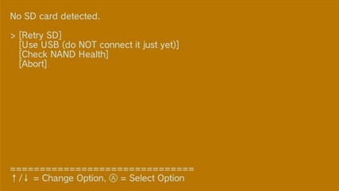
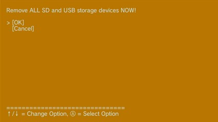
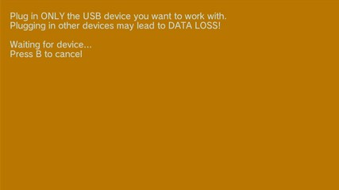

Tarjeta SD no detectada
Condición: No se detecta ninguna tarjeta SD a nivel de hardware. (
/dev/sdcard01)Pantalla:

No SD card detected. [Retry SD] [Use USB (do NOT connect it just yet)] [Check NAND Health] [Abort]
Si la Wii U no tiene una tarjeta SD en la ranura frontal de la Wii U y quieres usar una tarjeta SD entonces insértala en este momento y selecciona [Retry SD] para detectar la tarjeta SD.
Si la Wii U tiene una tarjeta SD insertada, quítala e intenta volver a insertarla o cambia el adaptador microSD (en caso de usar una tarjeta microSD). La tarjeta SD debe insertarse en la ranura frontal de la Wii U (no a través de un adaptador USB). Una tarjeta SD en un adaptador USB es tratada como un dispositivo de almacenamiento USB. Selecciona [Retry SD] para reintentar detectar la tarjeta SD en la ranura frontal de la Wii U.
Si deseas utilizar un dispositivo USB para los *archivos homebrew*, esta pantalla es lo esperado. NO conectes el dispositivo USB todavía, simplemente selecciona la opción [Use USB (do NOT connect it just yet)]. Conecta el dispositivo USB únicamente cuando se te indique. La tarjeta SD será emulada en el dispositivo USB. En adelante si otras guías mencionan la tarjeta SD, deberás utilizar la tarjeta SD emulada en el dispositivo USB en su lugar.

Remove ALL SD and USB storage devices NOW! [OK] [Cancel]
Si seleccionas la opción [Use USB (do NOT connect it just yet)] debes retirar todos los dispositivos de almacenamiento SD y USB en este momento. Después darle a [OK].

Plug in ONLY the USB device you want to work with. Plugging in other devices may lead to DATA LOSS! Waiting for device… Press B to cancel
Ahora es cuando debes conectar el dispositivo USB que deseas utilizar. No conectes ningún otro dispositivo USB o tarjeta SD. Al detectar el dispositivo USB la aplicación pasa automáticamente a la pantalla de Formateo de SD o USB.